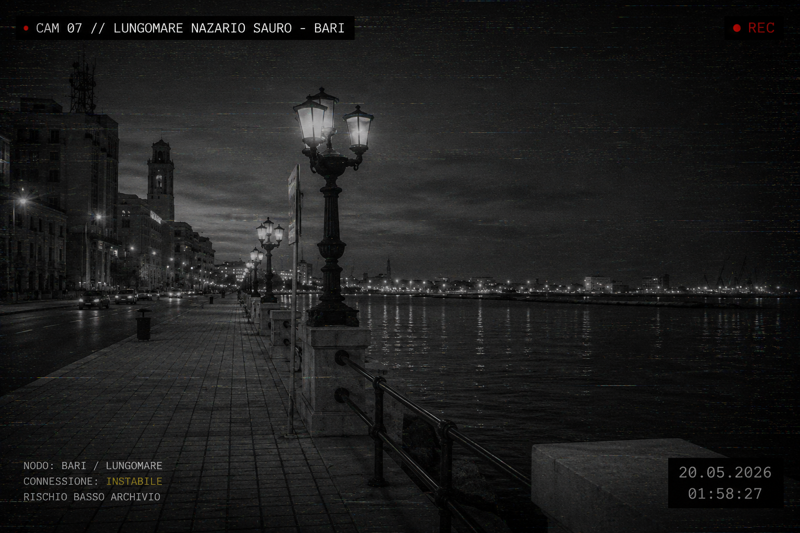

OSSERVA. REGISTRA. NON SPIEGARE.
RISCHIO BASSO
Archivio non indicizzato di presenze anomale, interferenze urbane e segnali registrati lungo margini non verificati.
_
_
CAM 07 // LUNGOMARE - BARI
● REC

// STATO SISTEMA
connessione: instabile
ultimo segnale rilevato: 20.05.2026 01:58
nodo attivo: Bari / lungomare
interferenze rilevate: 3
archivio aggiornato: 20.05.2026
> monitora attività
// ULTIMI AVVISTAMENTI
// TRACCE
materiale caricato: manifesto.jpeg
mappa locale: bari_map.png
rumore ambiente: crt_noise.mp3
feed camera: cam_lungomare.png
stato: non verificato
AUDIO AMBIENTALE
canale anonimo attivo / riproduzione manuale
canale anonimo attivo / riproduzione manuale